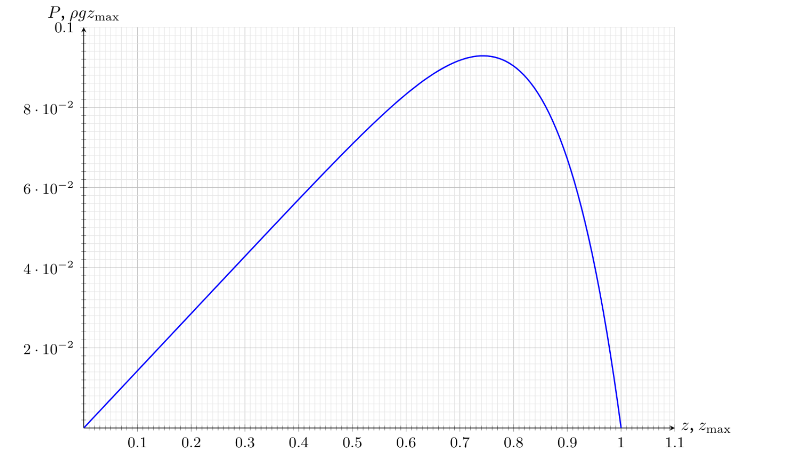

A1.
A2. According to Pascal's law, the pressure of a liquid depends only on the depth of immersion, therefore
B1. The equilibrium condition projected onto the vertical axis:
B2. Using the relations $\mathrm{d}m = \rho\pi R^2\,\mathrm{d}z$ and $\sigma(z) = KP(z)$, we obtain
$$\frac{\mathrm{d}P}{\mathrm{d}z} + \frac{2K\mu P(z)}{R} - \rho g = 0$$Solving the equation and taking into account that $P(0) = 0$, we obtain
$$P(z) = \frac{\rho g R}{2\mu K}\left(1 - e^{-2\mu K z/R}\right)$$Let us find the pressure at the bottom by substituting $z = h$ into the expression obtained:
$$P(h) = \frac{\rho g R}{2\mu K}\left(1 - e^{-2\mu K h/R}\right)$$Hence
B3. For small heights of the grain layer, the dependence of the pressure on the bottom on the height is approximately described by the expression
$$P(h) \approx \rho g h$$Let us draw a tangent to the graph at the point $(0, 0)$. The slope of this tangent is
$$k_1 = 6.5~\mathrm{kPa/m}$$Hence
For sufficiently large $h$, the pressure on the bottom reaches a steady value. The steady-state pressure is
$$P_\infty = 26.7~\mathrm{kPa}$$Hence
C1.
C2. The equilibrium condition projected onto the vertical axis (here it is assumed that $\alpha \ll 1$, therefore $\cos\alpha \approx 1$, $\sin\alpha \approx \alpha$):
C3. Next, in the equation obtained in the previous step, we neglect the term $\alpha$ compared to $\mu$. Note that near the free surface of the granular material the pressure is zero:
$$P(0) = A(1-\gamma) = 0$$From this
The dependence $P(z)$ is described by the following differential equation:
$$\frac{\mathrm{d}(Pr^2)}{\mathrm{d}z} + 2K\mu P(z)r(z) - \rho g r^2(z) = 0$$Let us introduce the notation $\xi = \dfrac{z}{z_{\max}}$. Substituting the expression for $P(z)$ given in the problem statement into the differential equation, taking into account that $\gamma = 1$:
$$\begin{aligned}\alpha^2 A z_{\max}\left(-1 + \beta(1-\xi)^{\beta-1}\right)(1-\xi)^2 &+ 2(K\mu-\alpha)A\alpha z_{\max}(1-\xi)\left(1-\xi-(1-\xi)^{\beta}\right)\\ &- \rho g\alpha^2 z_{\max}^2(1-\xi)^2 = 0\end{aligned}$$The equation can be satisfied for all $\xi$ only if the coefficients of $(1-\xi)^2$ and $(1-\xi)^{\beta+1}$ vanish. Therefore
$$-A\alpha^2 + 2(K\mu-\alpha)A\alpha - \rho g\alpha^2 z_{\max} = 0$$Hence
Also, the following holds:
$$\alpha^2 A\beta - 2(K\mu-\alpha)A\alpha = 0$$From this
C4.

Let us calculate for $\alpha = 0.2K\mu$:
$$A \approx 0.143\rho g z_{\max},\qquad \beta = 8$$$P(z)$ is maximal when $1 - \xi - (1-\xi)^8 \to \max$, i.e.
$$8(1-\xi)^7 = 1,\qquad z = \left(1 - 8^{-\frac{1}{7}}\right)z_{\max} \approx 0.26z_{\max}.$$The corresponding pressure is
Editor's note: in the original graph the maximum lies at $\approx 0.74$ on the horizontal axis, so that axis is in fact the distance $1 - z/z_{\max}$ measured from the apex. Against the depth $z$ from the free surface, as in the calculation above, the maximum is at $z \approx 0.26z_{\max}$ and the graph is mirrored: it rises steeply as $P \approx \rho g z$ near the free surface $z = 0$ and falls gently to zero at $z = z_{\max}$.
D1. The equilibrium condition projected onto the vertical axis (here the friction force acting on the granules from the vessel is directed downwards, since the force with which the granules act on the vessel lifts it):
D2. The equation obtained has exactly the form of the equation of B1. Solving it, we obtain
D3. For a fixed height $H$ of the granules, the dependence of the pressure $P(z)$ is likewise given by
$$P(z) = A + Be^{-z/\lambda}$$Let us calculate the total force acting on the rod:
$$F = 2\pi aK\mu_2\int_0^H P(z)\,\mathrm{d}z = 2\pi aK\mu_2 A\left(H - \lambda\left(1 - e^{-H/\lambda}\right)\right) \approx 2\pi aK\mu_2 A\frac{H^2}{2\lambda},$$where we have used $H \ll \lambda$. By Newton's third law, a force of the same magnitude holds the granules up. In the critical situation this force must balance the gravity acting on the granules:
$$\rho g\pi(R^2-a^2)H = \pi aK\mu_2 A\frac{H^2}{\lambda}$$Expressing $H$ from this,
E1. From the incompressibility condition,
E2.
Editor's note: the original denotes this energy $W_1$ (the problem's $E$); the energy of the volume at the cross-section $S_2$ is written $W_2$ in the same way.
E3. At the pressure $p_1$ a volume $V_1$ of fluid is “pushed into” the stream tube, and at the pressure $p_2$ a volume $V_2 = V_1$ is “pushed out” of it. Therefore
E4. We write the law of conservation of energy:
$$\rho S_1\Delta l_1\,\frac{v_2^2 + 2gh_2 - v_1^2 - 2gh_1}{2} = (p_1 - p_2)S_1\Delta l_1$$Cancelling $S_1\Delta l_1$ on both sides, we obtain
Editor's note: the original answer (marking scheme included) lacks the factor $\rho$, which the equation just above shows must be there.
E5. From the Bernoulli equation derived above, for the flow of an ideal fluid
$$p + \rho g h + \rho\frac{v^2}{2} = \mathrm{const}$$The pressure at the hole equals the atmospheric pressure, and so does the pressure at the upper boundary between the fluid and the air. Therefore
$$p_0 + \rho g h + 0 = p_0 + 0 + \rho\frac{v(h)^2}{2}$$and hence
E6. The volume flow rate through the hole is
$$\dot V = -\frac{\pi D^2}{4}\sqrt{2gh}$$The continuity equation gives the differential equation for the water height above the hole:
$$\pi R^2\dot h = -\frac{\pi D^2}{4}\sqrt{2gh}$$Since $R \gg D$, $\dot h \ll \sqrt{2gh}$, so the assumption that the fluid velocity far from the hole can be neglected is justified. Now the outflow time can be expressed:
F1. In the critical situation the surface of the granular material is inclined at the angle $\theta_r$ to the horizontal and touches the outer edge of the hole. From this,
F2. Let us estimate the velocity of the granules at the exit of the hole using the law of conservation of energy:
$$v \propto \sqrt{D}$$Let us estimate the mass flow rate of the granules:
$$\frac{\mathrm{d}m}{\mathrm{d}t} = \rho S v \propto D^2\sqrt{D} \propto D^{5/2}$$From this